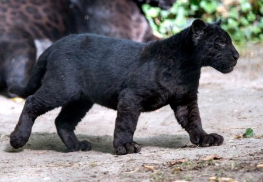
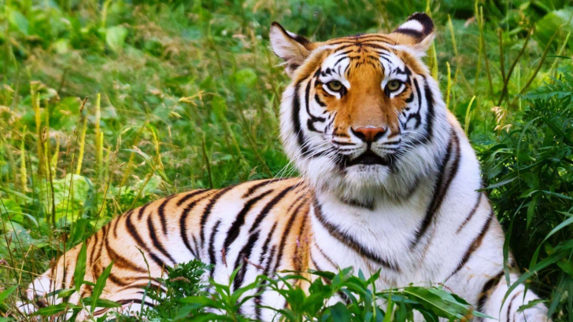
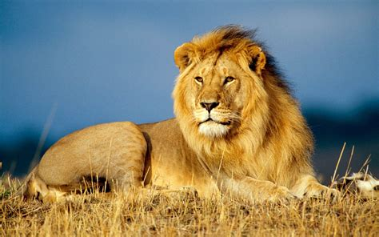
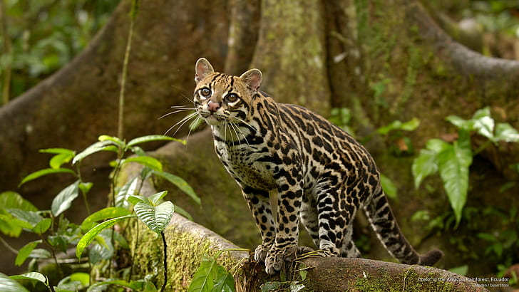
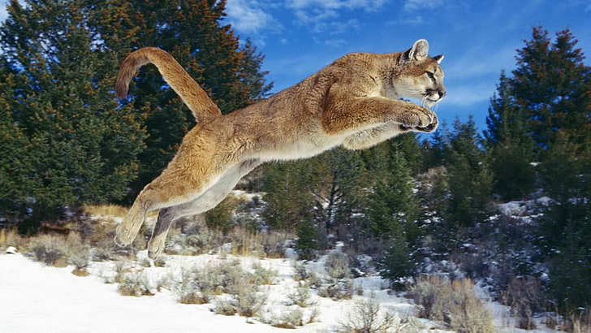
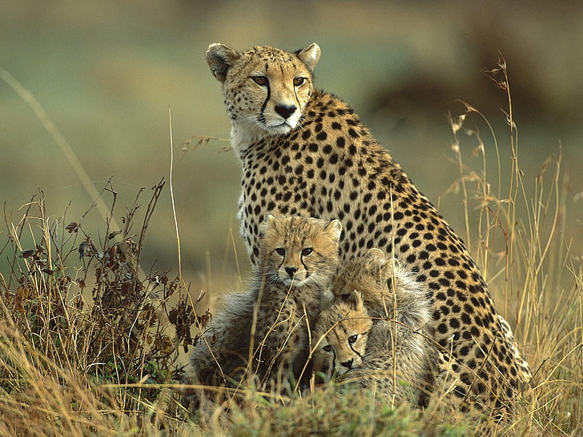
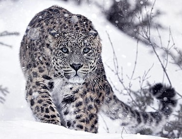
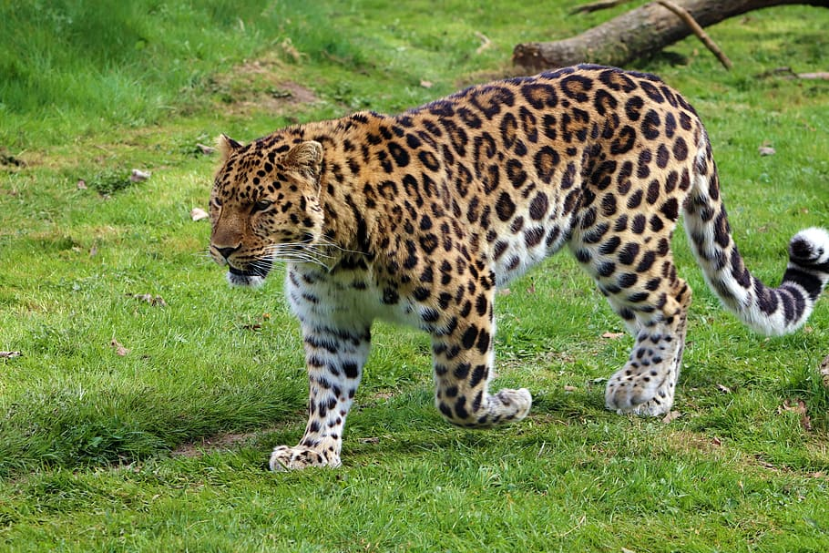

Wild Cats
There is a large variety of the Wild Cats around the globe but I would like to share information about some of them.
First, I would like you to meet a Black Beauty, my favourite one.
Black Panther
Black panther, a general term used to refer to large felines [jaguars and leopards] that are characterized by a coat of black fur or large concentrations of black spots set against a dark background.
- Genus: Panthera
- Average Size: 4-9 feet from head to tail
- Average Lifespan: 12-15 years
- Diet: Deer, wild hogs, wild boar, live stock, small animals including birds and fish
- Habitat: Asia, Africa, America
Black panthers have good hearing, excellent eyesight, and a strong jaw. They are often called 'the ghost of the forest'. This animal is a smart, stealth-like attacker and the best climber among all Big Cats.
Bengal Tiger
Tigers live solitary lives, hunting on their own. They prefer to hunt by night, seizing their prey around the neck. A tiger will ambush and then jump on its prey, bringing it down to the ground. They can swim and climb very well.
- Genus: Panthera
- Average Weight: 220-485 lb.
- Average Size: 108-122in from head to tail
- Average Lifespan: 10-12 years
- Diet: Large prey
- Habitat: Southern Asia
The rare mutant white Bengal Tiger has pale stripes and bluish eyes but as in the normal Bengal Tigers, the facial patterning is highly individual.
An average Bengal Tiger has a rich shade of orange-brown fur, with variable black stripes. Tiger's sharp teeth at the corner of the mouth allow it to kill its prey quickly.
Lion
The lion is often described as King of Beasts. They are unusual amongst the big cats in that they are social by nature, living in prides.
- Genus: Panthera
- Average Weight: 330-550 lb.
- Average Size:102-141in from head to tail
- Average Lifespan: 7-10 years
- Diet: Wildebeast, buffalo and zebra
- Habitat: Africa south of Shara and India
The lionesses hunt collectively to ambush and overpower creatures that can be larger than themselves. The lion population in India is endangered.
Ocelot
Ocelot, a small wild cat which is well-adopted to tree-climbing, and may spend most of it time off the ground.
- Genus: Panthera
- Average Weight: 25-35 lb.
- Average Size: 32-57in from head to tail
- Average Lifespan: 5-7 years in the wild
- Diet: Rodents and other creatures, even turtles and fish, small deer
- Habitat: Southern USA across Central America down to nothern parts of Argentina
Solitary and nocturnal by nature, ocelots are difficult to observe. They seek cover during the day sleeping in vegitation on the ground or may dose while laying on a branch up a tree. Ocelots will hunt prey in the trees, on the ground and even water. Rodents are their preferred meal.
Puma
The puma is known by over 40 different names [including cougar and mountain lion] - more than any other species in the animal world.
- Genus: Puma
- Average Weight: 75-160 lb.
- Average Size: 60-108in from head to tail
- Average Lifespan: 8-10 years in the wild
- Diet: Medium size prey including live stock
- Habitat: Asia, Africa, America
These wild cats have an amazing ability to jump, thanks to their powerful hind legs. They can leap horizontally up to 40 ft, may spring up to 18 ft into the air, and are good climbers. Pumas try to ambush prey-often deer. This anymal has an excellent eyesight helping puma to pinpoint the accurate position of its prey. Puma has five retractable claws on each front foot helping this animal to maintain its balance when climbing or jumping.
Cheetah
Cheetah is the fastest land mammal on earth which is able to spring at speed of up to 75m/h over short distances when pursuing prey.
- Genus: Acinonyx
- Average Weight: 88-143 lb.
- Average Size: Length: 78-86 inches; 35 inches tail
- Average Lifespan: uo to 12 years in the wild
- Diet: Gazelles and may consume other herbivores
- Habitat:Mostly in southern and eastern Africa, nothern Iran
Cheetahs have good hearing, excellent eyesight, and a strong jaw. The large eyes point towards helping to determine the accurate position of its prey.
The cheetah has specialized muscles that provide amazing acceleration. It can go from a standing start to a speed of 40mph in just three strides.
Unlike other cats, a cheetah's claws are not retractable.
Snow Leopard
The snow leopard is internationally recognized as an endangered species and still remains of being a prime target for poachers.
This animal a solitary, high-altitude hunter, but because of the relative scarcity of food in its rocky Himalayan terrain, it often migrates with its prey.
- Genus: Panthera
- Average Weight: 55-165 lb.
- Average Size:Body length: 4-5 feet long; tail is 3ft
- Average Lifespan: 20 years in captivity
- Diet: Wild sheep, goats, deer, wild boar,small mammals, some birds
- Habitat: hight mountains of Cental Asia
The Snow Leopard relates to the big cats of the Panthera species, but it does not roar. It has extremely strong back legs allow leap up to 50 feet, useful for surprising the prey. It has good hearing, excellent eyesight, and a strong jaw.
Amur Leopard
ENDANGERED
Amur Leopard is a critically endanfered wild cat. The Amur leopard is also known as the Far East leopard, the Manchurian leopard or the Korean leopard.
Due to poaching its population in wild reduced to only 110 individuals as 2021 studies confirmed.
- Genus: Panthera
- Average Weight: 70-105 lb.
- Average Size: 6-7 feet from head to tail
- Average Lifespan: 10-15 years in wild, up to 21 years in captivity
- Diet:Siberian roe deer, Manchurian sika deer, Manchurian wapiti, Siberian musk deer, Amur elk, Ussuri wild boar, hares, Asian badgers, fowl, and mice.
- Habitat: Primorsky region of Russia and northeast of China
The Amur leopard can easily be differentiated from other leopard subspecies by its thick, pale cream-colored fur, particularly in winter. It is well adapted to the cold climate and heavy snowfall of the region. Nimble-footed and strong, it carries and hides unfinished kills so that they are not taken by other predators. Amur leopards are solitary and are extremely conservative in their choice of territory. An individual's territory is usually located in a river basin.